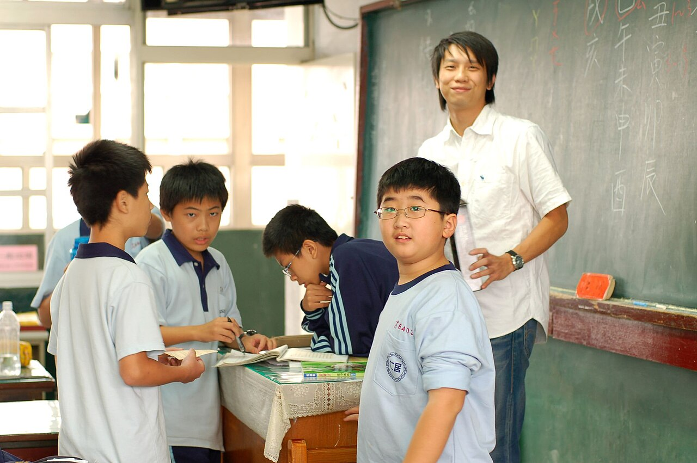

TEAM EXPERIENCE / 202501
“服务中国”活动联系工作证明广东碧桂园学校于 2025 年 9 月 26 日出具，记录相关学生参与“服务中国”活动的联系与支持工作。这份证明只说明团队过往经历；本次学校和行程信息另见校方材料。
查看原始证明 PDF ↗广东 · 惠州 · 惠东 · 白盆珠镇 · 共和村
走进一所乡村小学，先听见真实需要，再把课堂、走访与物资准备，一件件做扎实。
一堂课、一份物资或一次走访都有边界。认真听、一起做、留下记录，让支持知道要去哪里。
我们把“微光”理解为对一个具体需要的认真回应。行动不会预设谁来拯救谁；学校、老师、学生与家庭是这段共同实践的主体。团队负责带着准备与尊重走进现场，并把做过什么、尚待什么、后续听到什么如实记下来。
查看目前进度 ↗广东省惠州市惠东县 · 白盆珠镇 · 共和村
目的地是惠东县白盆珠镇共和村共和小学。根据校方确认的学校情况与实践活动安排，学校有 12 名在职教师，设六个年级、六个班，基本教学设施可满足日常需要。
学校情况材料标注上午 8:10、下午 14:00，并记为上午 4 节、下午 2 节；教师周课表首节标注 8:40、14:10，表内列出上午 3 节、下午 3 节。两份材料没有说明时间与节次口径的关系，页面先分别照录，待校方确认后更新。校外活动由教师全程陪同。
学校信息来自校方提供的材料。镇域背景参考白盆珠镇简介 ↗

六个年级明细已获校方确认，合计 93 人。我们据此安排分龄课程和物资准备，图表旁保留完整表格，方便核对。
校方确认：93 名学生
六个年级合计男生 47 人、女生 46 人。原始材料中的“90 人”为此前记录；本页采用校方确认的年级明细更新总数。
| 年级 | 男生 | 女生 | 合计 |
|---|---|---|---|
| 一年级 | 10 | 4 | 14 |
| 二年级 | 5 | 4 | 9 |
| 三年级 | 9 | 10 | 19 |
| 四年级 | 6 | 9 | 15 |
| 五年级 | 5 | 9 | 14 |
| 六年级 | 12 | 10 | 22 |
| 合计 | 47 | 46 | 93 |
每周课程安排 · 四至六年级
课表仅列出四至六年级的星期、节次、时间和课程名称，供团队按年级准备活动。材料没有列出一至三年级在这张表中的排课信息，不能据此判断低年级课程安排。
表内空白节次显示为“暂无志愿课程安排”，不代表学校停课。学校情况材料记为上午 4 节、下午 2 节；本表列上午 3 节、下午 3 节，两份材料的节次和时间口径待校方确认。本页仅作筹备展示，不作为学校完整作息表。
周五下午 · 走访贫困家庭具体对象、路线与物资安排由学校协调；仅在家庭自愿并同意后开展，网站不公开姓名、住址及可识别信息。
整理自团队提供的《教师任课周课表》。公开版仅呈现年级、星期、节次时间和课程名称；教师姓名及内部排课备注不公开。学校材料中的作息时间与本表首节时间口径关系待校方确认。
从听取反馈开始。五日活动框架已获校方确认；课程细目、物资数量和走访对象仍要按实际需要与参与者意愿协调。点击条目查看准备与反馈方式。
从课堂观察开始，尊重学校已有的教学节奏。
具体需要了解各年级学习特点与课程需求；阅读指导空间和内容以校方安排为准。
准备步骤校方行程安排语文、数学、英语课堂观摩，各一节 40 分钟，并利用图书角或美术角开展阅读指导。
待确认观摩课表、学生参与方式、阅读材料与场地；授课老师及主题由校方确认。
执行安排按校方课表协助，不打乱正常教学；志愿者不替代在职教师授课。
预计产出课堂观察笔记、阅读活动记录与后续建议。
后续反馈经校方审阅后，更新活动摘要与可公开材料。
让活动适合年龄、场地和天气，也照顾到每位学生。
具体需要为学生提供安全、友好的运动与合作体验。
准备步骤按学校安排备选规则简单、无需专业器材的户外游戏。
待确认场地、分组、天气预案、健康与安全提示及拍摄授权。
执行安排校方教师全程陪同，设置清楚的活动边界和休息安排。
预计产出活动流程、参与情况和教师反馈摘要。
后续反馈汇总活动观察；不公开可识别学生影像，除非获得有效授权。
把倾听放在前面，把家庭意愿和隐私放在中心。
具体需要了解学校推荐家庭的实际情况与希望获得的支持。
准备步骤校方行程安排上午走访 2 户、下午走访 2 户，准备大米和食用油；具体数量尚未提供。
待确认家庭自愿参与、监护人同意、路线与交通、家庭实际需要、物资数量。
执行安排由学校协调并安排成年人同行；走访中不作未经核实的困难标签判断。
预计产出经匿名处理的走访摘要、物资采购与交接记录。
后续反馈仅发布获家庭同意且无法识别个人的汇总信息。
从身边的自然和劳动出发，带着问题观察和记录。
具体需要把课堂学习延伸到当地生态、环境与生活观察。
准备步骤材料提出环境主题活动，也列有景区或茶叶加工研学作为备选形式。
待确认具体地点、交通、费用、天气、安全措施、课程与学校意见。
执行安排确定方案后再按校方要求组织；未经确认的备选项目不视为已成行。
预计产出学生观察记录、活动总结和安全复盘。
后续反馈将结果交学校核阅，再公开获授权的内容。
下列五日行程根据校方提供的《共和小学基本情况及实践活动行程安排》整理，框架已经确认；活动尚未开展，具体执行日期待公布。
背景照片由团队提供，仅作氛围配图 · 非共和小学本次行动现场
了解校园空间、班级与日常流程，在教师指导下体验教学辅助。先熟悉，再参与。
行程来源：校方提供材料 · 具体课表以执行时安排为准校方行程安排语文、数学、英语各一节 40 分钟的课堂观摩，并利用图书角或美术角开展阅读指导。
课程由校方安排 · 志愿者遵循课堂秩序在教师陪同下开展户外体育与游戏活动。场地、分组和天气预案需要提前确认。
安全与参与方式按校方执行要求安排校方行程安排上午走访 2 户、下午走访 2 户并准备大米和食用油。家庭名单、同意、实际需要、物资数量与行程均需协调确认。
未经家庭同意，不拍摄或公开可识别信息计划以自然观察或环境主题活动作结。材料中的景区、茶叶加工学习是备选示例，地点与形式尚未确认。
整理课堂与走访反馈 · 回访方式待协商公开时间线
每条更新标明状态、日期、完成事项、下一步和待确认内容。状态依据团队目前提供的信息整理。
已确认学校基本情况、五日活动框架及六个年级人数明细；学生总数以校方确认的 93 人为准。
下一步：把行程拆成可执行的课程、走访与物资清单。
仍待安排：具体执行日期、课表细节、家庭同意与物资数量。
依据已确认的五日框架准备分龄课程、活动安全预案及匿名记录方式。
下一步：公布执行日期和分工，完成家庭参与沟通及物资数量确认。
仍待安排：具体课表、走访路线、清单与交接方式。
已将团队提供的排课表整理为可筛选的筹备信息，页面不公开教师姓名和内部排课备注。
下一步：请学校确认课表版本、生效日期和首节时间口径。
仍待安排：年级范围、时间关系与具体课程以校方最终确认为准。
暂无已完成记录。最近更新时间：2026 年 10 月 10 日。
最近更新时间：2026 年 10 月 10 日 · 下一次更新：课表版本、执行日期与分工确认后
目前没有可公开的课程记录、物资交接或回访结果。活动结束后，我们会在获得授权后完成匿名处理并经学校核阅，再按日期更新课堂摘要、物资清单与去向、学校反馈及后续回访。
NO FIELD RECORDS YET / 本页不预填成果或捐赠数字团队过往服务经历
既往服务经历帮助介绍团队背景；每份材料只说明其实际记载的内容。
广东碧桂园学校于 2025 年 9 月 26 日出具，记录相关学生参与“服务中国”活动的联系与支持工作。这份证明只说明团队过往经历；本次学校和行程信息另见校方材料。
查看原始证明 PDF ↗校方提供的《学校基本情况及实践活动行程安排》。页面保留校方确认的五日行程，并说明仍需按实际情况安排的执行细节。
查看学校情况与行程 PDF ↗用公开记录说明每一步。
本页面由微光计划团队用于介绍支教筹备。学校与团队已确认活动框架；具体参与分工会在执行日期确定后公布。
五日活动框架已经校方确认。周课表目前是四至六年级的筹备版，具体日期、课表版本、家庭参与意愿和研学地点会按执行条件安排，并在确定后更新。
目前没有最终物资清单。请先联系团队登记意向，等学校按实际需要确认品类与数量后再安排。
邮件联系团队，介绍你的可参与时间和擅长内容。人员安排、校内规则与安全要求将由团队和校方沟通确认。
需先确定具备相应资格的接收主体和正式渠道。在此之前，本网站不收款，也不展示会被误认为真实支付的入口。
不公开姓名、住址、家庭困难细节和可识别影像。走访须经学校协调及家庭自愿同意；公开材料先做匿名处理，并取得必要授权。
计划按授权情况发布课程摘要、物资交接清单与去向、学校反馈和后续回访。没有实际记录的项目会保留空状态，不预填成果或金额。
善款接收主体和正式渠道还在了解中。你可以先联系团队表达意向；我们会在学校需求和合规接收方式确认后再发布具体信息。
志愿服务 请邮件说明可参与时间、擅长内容与联系方式。团队会在学校确认参与方式后回复。
物资支持 物资清单尚待学校确认。请先联系团队登记意向，暂不寄送，以免品类不符或重复。
正式捐赠 尚未确定合适的募款主体和官方接收渠道。本网站目前不收款、不生成捐赠订单；确认后会公开渠道与使用记录。
当前状态：不收款
正式募款主体与微信支付商户渠道尚未确定。本页只提供联系入口，不展示二维码或付款按钮。
天空氛围图：Muhammet Cengiz / Unsplash · 非共和村实景 · Unsplash License